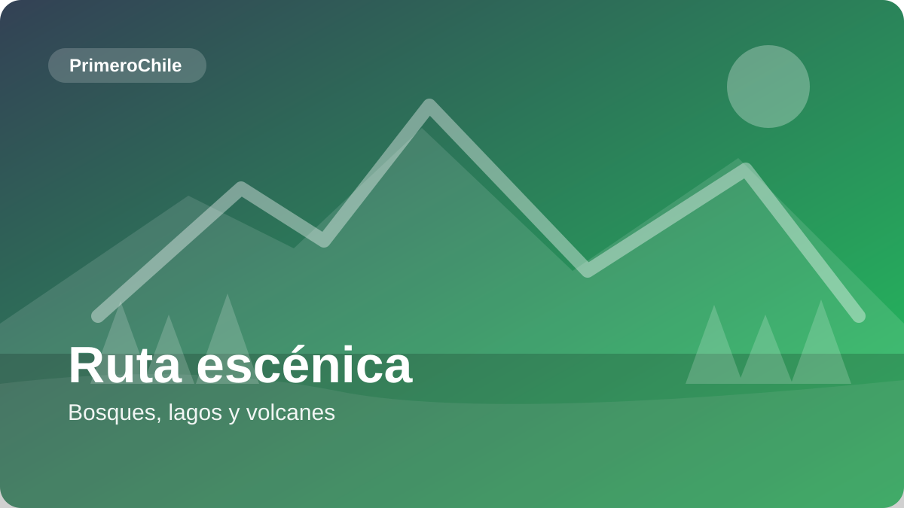
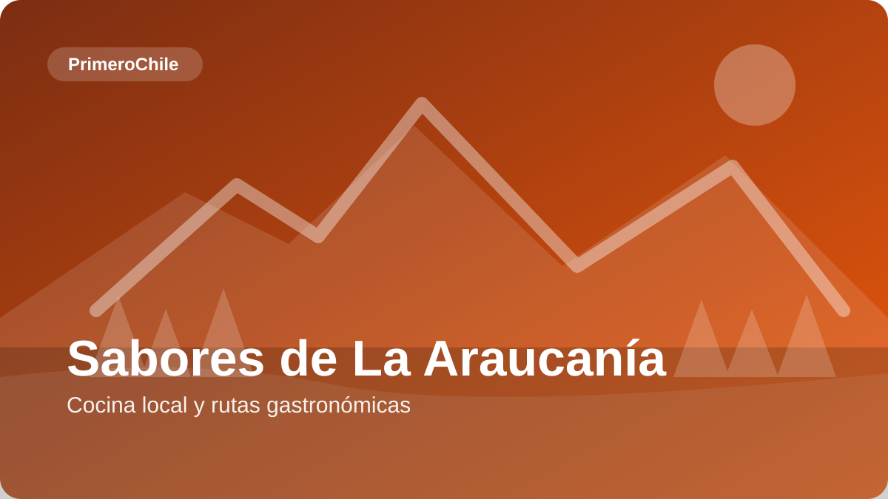
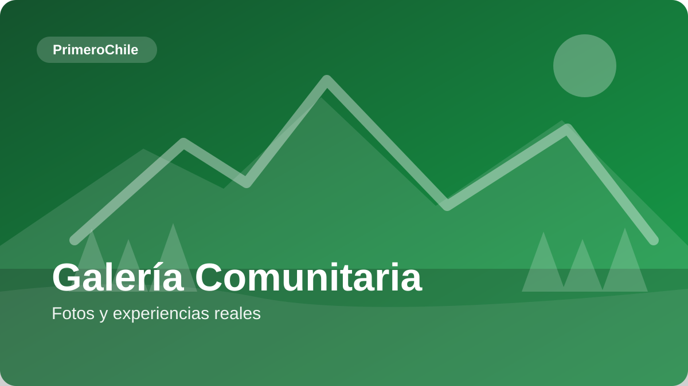
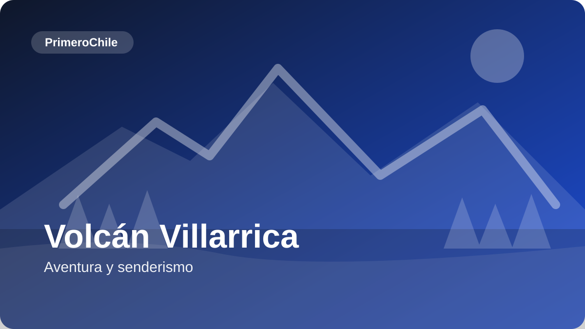
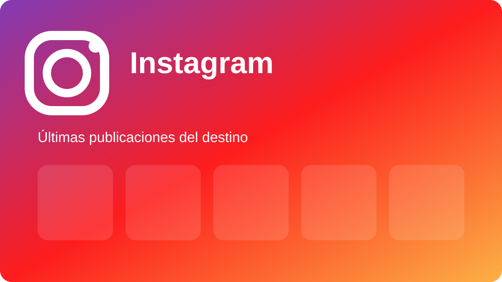
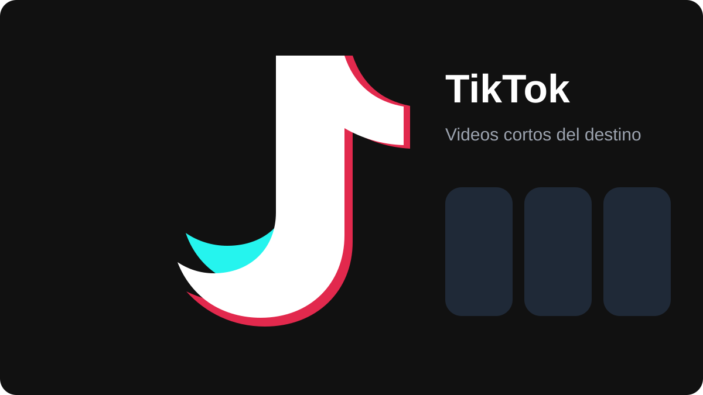
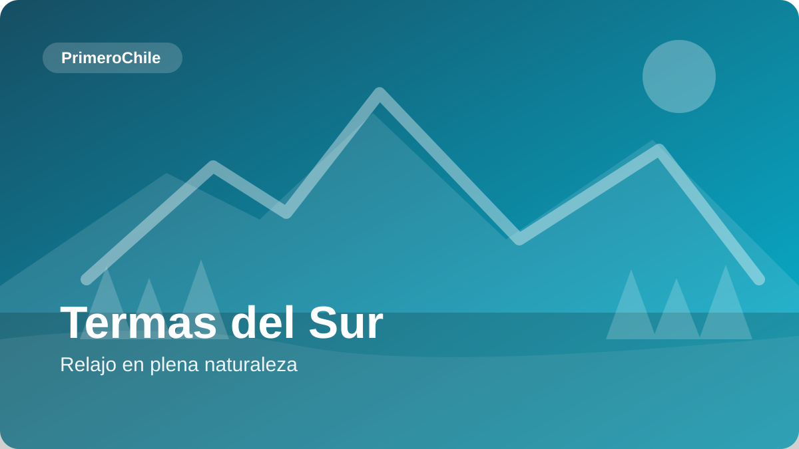
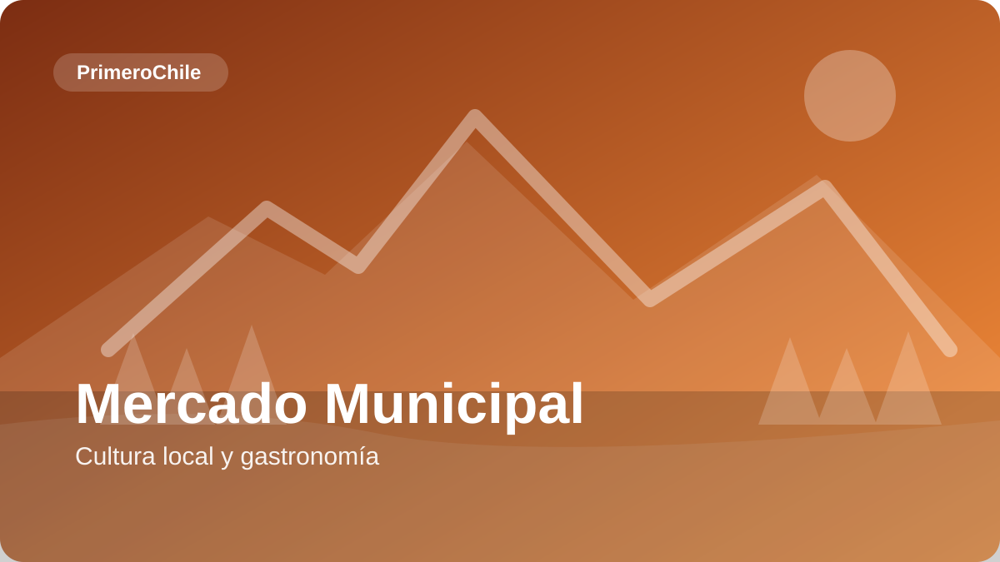

Clima
Templado lluvioso con influencia andina. Veranos suaves (15–25°C) e inviernos fríos con nieve en zonas de montaña (5–12°C).
Tierra de volcanes activos, lagos cristalinos, bosques milenarios y cultura mapuche viva. La idea de este bosquejo es mantener la magia visual del sitio actual, pero con una navegación mucho más clara.
Templado lluvioso con influencia andina. Veranos suaves (15–25°C) e inviernos fríos con nieve en zonas de montaña (5–12°C).
Verano para actividades al aire libre y termas. Invierno para nieve, paisajes nevados y deporte aventura en volcán.
La Araucanía es una tierra mágica donde la cultura mapuche milenaria se encuentra con paisajes de ensueño. Volcanes activos, lagos cristalinos, bosques de araucarias centenarias y termas naturales conforman un destino único en el sur de Chile. Pucón, la capital de la aventura, te espera con actividades de adrenalina y relax, mientras que Villarrica ofrece el encanto lacustre y Temuco la puerta de entrada a esta región llena de historia y naturaleza.
Contenido importante
Pucón, Villarrica, Temuco y Curarrehue con una vista dedicada, filtros laterales y tarjetas más respiradas para que la navegación se sienta obvia.
Volcanes, termas, gastronomía, rutas escénicas y cultura local separados en una vista pensada para inspirar y filtrar.

Cada comuna tiene su mini relato, sus imperdibles y una lista corta de razones para entrar. Así el usuario no tiene que adivinar por dónde empezar.

Alojamiento, gastronomía, agencias y transporte ya no viven apretados dentro de una misma home. Tienen su propia página con búsqueda, filtros y CTA claros.


Tarjetas destacadas con más aire, textos menos apretados y agrupación por experiencia: aventura, relax, cultura, gastronomía y panoramas familiares.

Listado limpio con categorías y contacto rápido. El usuario no debería scrollear una eternidad en la home para recién encontrar dónde dormir o comer.


Contenido de rutas de invierno.
Contenido de rutas y recomendaciones de termas.

JP
MNRSContenido relevante para la autogestión de publicaciones para emprendedores.